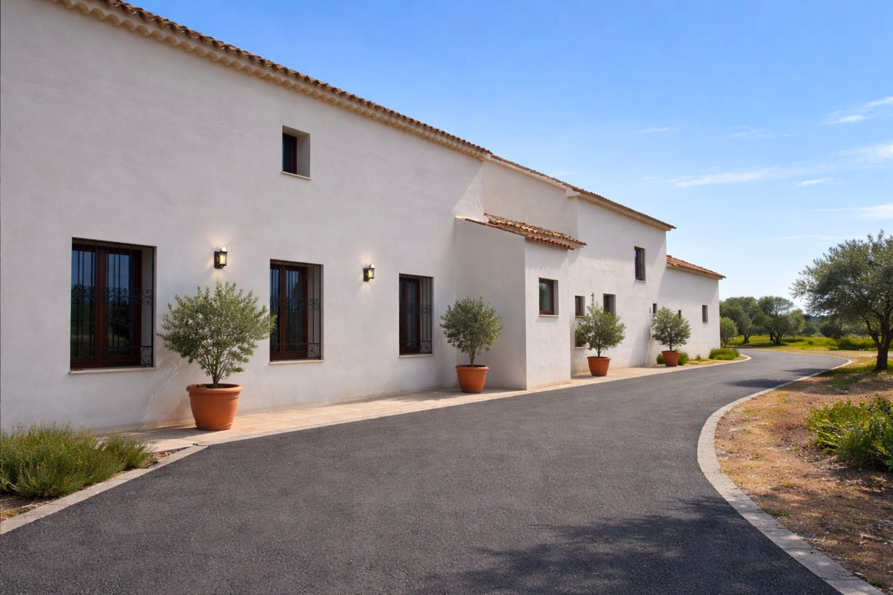
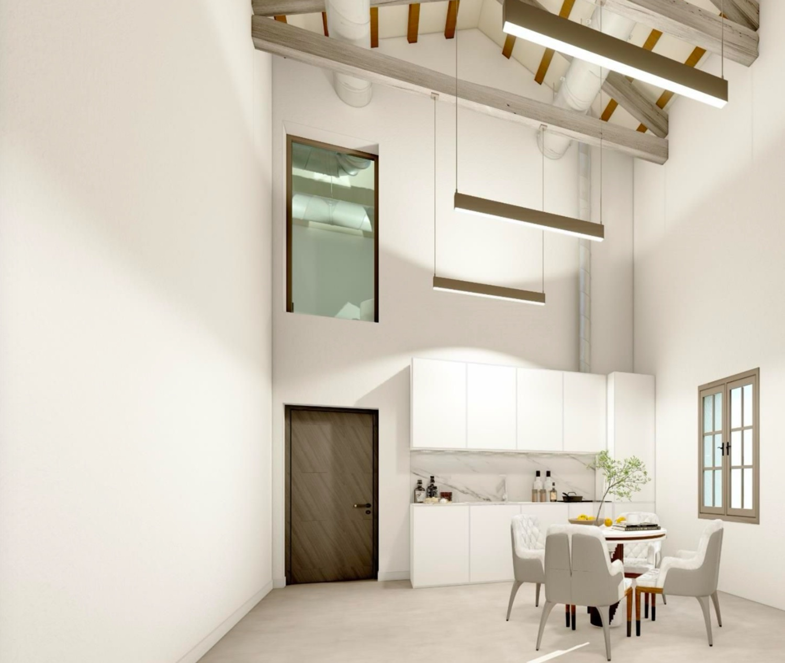
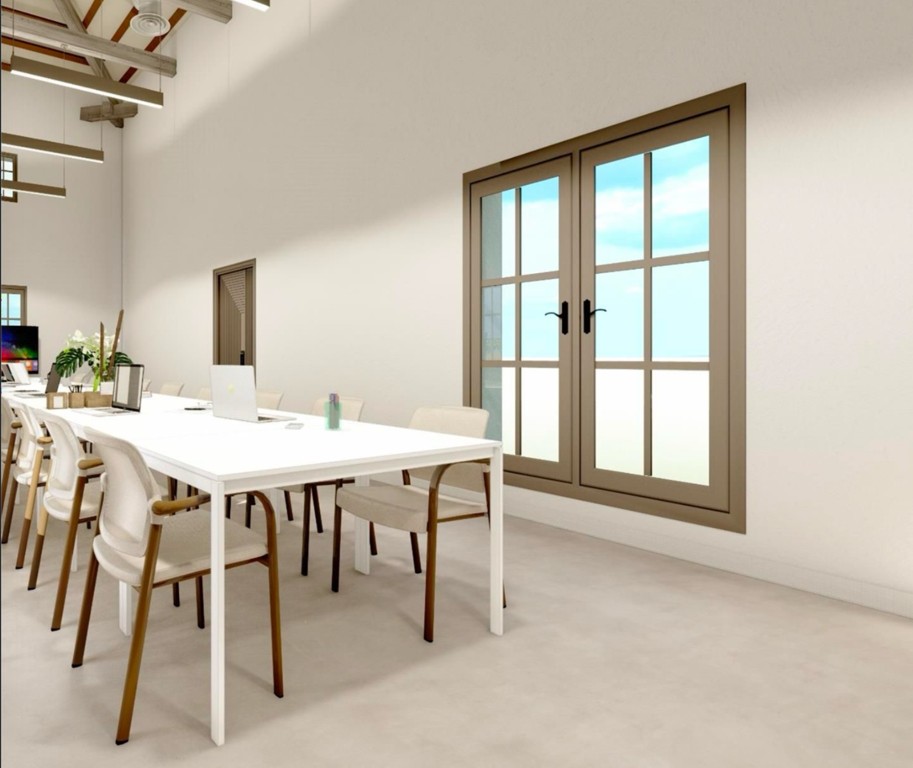
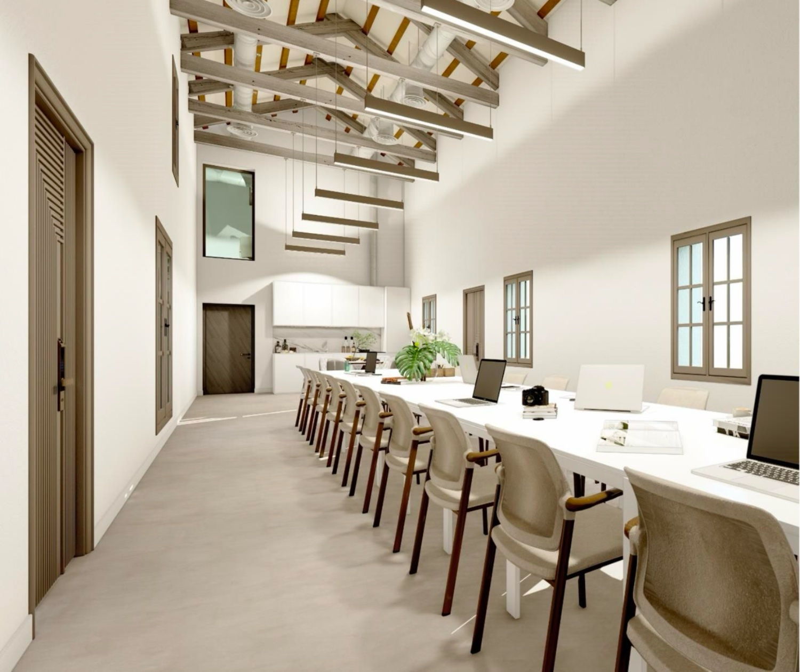
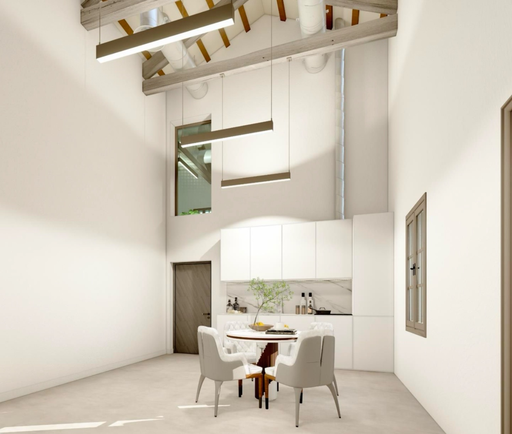
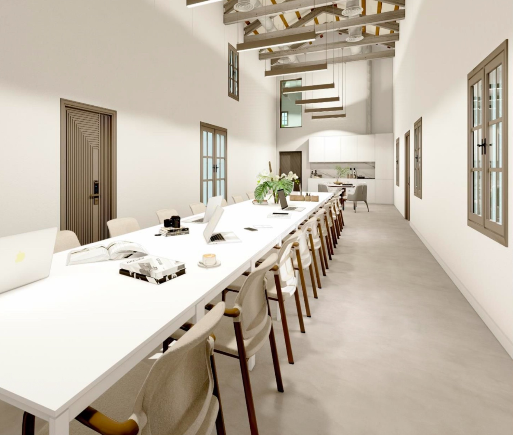
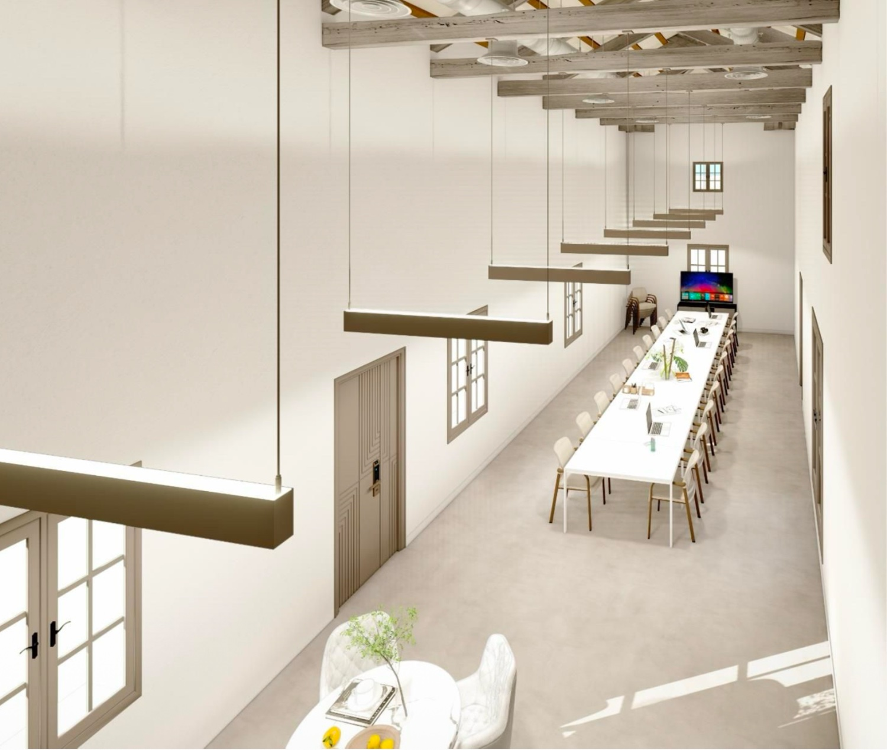
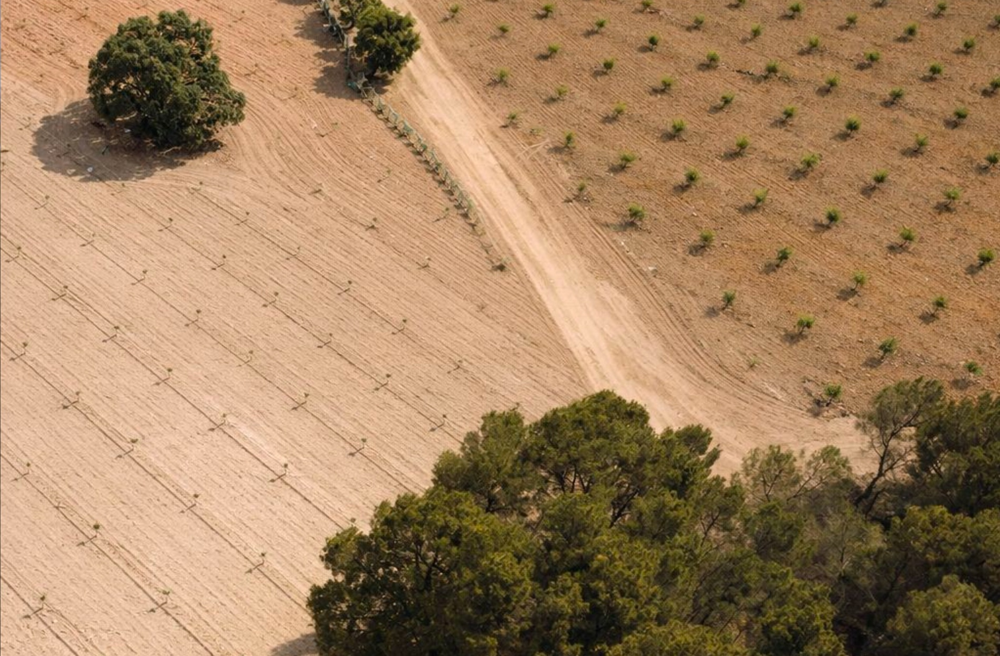

01
Punto de encuentro
Hub físico de reuniones y gestión de proyectos, con espacio para empresas y startups.

El punto de encuentro donde la tecnología, las empresas y el campo se conectan para transformar la cadena de valor — validado sobre un campo experimental real.
El Centro de Innovación Antonete conecta tecnología, empresas y campo para transformar el sector agroalimentario. Un mismo lugar donde podrás:
Ver despliegues técnicos funcionando en un entorno productivo real, no en una demo.
Realizar pruebas piloto de nuevas herramientas antes de su lanzamiento al mercado.
Plantear necesidades productivas para que el ecosistema desarrolle soluciones a medida.
Acceder a capacitación especializada en Agricultura 4.0 para directivos y plantillas.
Hub físico de reuniones y gestión de proyectos, con espacio para empresas y startups.
Living lab de 170 ha para pruebas piloto y validación en condiciones reales.
Identificación de retos y formación de consorcios entre empresas, startups y centros.
Capacitación para directivos y agricultores, y apoyo a startups del sector.
Un clúster con la misión de identificar, compartir e implementar los retos de innovación que traen las nuevas tecnologías.






El espacio físico destinado a reuniones y gestión de proyectos, con áreas para empresas y startups, donde se desarrollan proyectos, se ejecutan programas de formación y se comparte conocimiento a través de eventos.

Una finca de cultivos de alto valor —pistachos, almendros, olivos y vides— para realizar pruebas piloto, testar tecnologías y validar resultados, con el objetivo de implementar soluciones en el mercado en el menor tiempo posible.
Sensores de humedad, riego inteligente, NDVI por dron y modelos predictivos. Cada anillo es una señal del campo real.
El socio plantea un reto productivo real.
Se acota la solución a desarrollar.
Empresa + startup + centro tecnológico.
Se prueba y valida en la Finca Antonete.
Se implementa lo validado, en el menor tiempo.
Ejemplo ilustrativo — optimización del riego en almendro mediante sensores de humedad y un modelo predictivo, validado sobre las 31 ha de experiencias.
IoT, big data, machine learning e IA, robótica y blockchain.
↗Reutilización y aprovechamiento de residuos agropecuarios.
↗Riego solar, bioenergías y reducción de huella de carbono.
↗Genética e insumos bio-orgánicos para el cultivo.
↗Servicios y procesos financieros específicos del sector.
↗Plataformas y vinculación directa entre oferta y demanda.
↗Acuerdos de colaboración que dan a los socios acceso a software, datos, infraestructura, formación y visibilidad.
Accede a tecnología, conocimiento y nuevas oportunidades de crecimiento. Tres pasos para entrar:
Gracias. La oficina técnica del CIA se pondrá en contacto contigo para concertar tu visita a la finca.